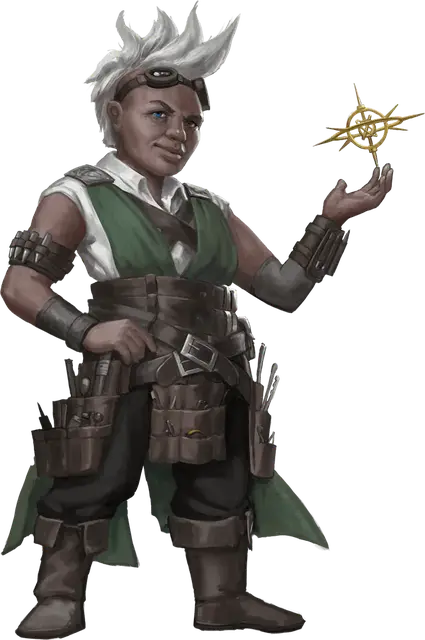

Маг-техник
Magewright
Средний Гуманоид (Любая раса), любое мировоззрение

Класс Доспеха 11
Хиты 9 (2к8)
Скорость 30 футов
| мод | спас | ||
|---|---|---|---|
| СИЛ | 11 | +0 | +0 |
| ЛОВ | 13 | +1 | +1 |
| ТЕЛ | 10 | +0 | +0 |
| мод | спас | ||
|---|---|---|---|
| ИНТ | 14 | +2 | +2 |
| МДР | 14 | +2 | +2 |
| ХАР | 12 | +1 | +1 |
Навыки Магия +4
Чувства пассивное Восприятие 12
Языки Общий, и ещё 2 языка
Опасность 0
Бонус мастерства +2
Особенности
Врожденное колдовство. Базовой характеристикой мага-техника является Интеллект (Сл спасброска от заклинания 12). Для сотворения одного из своих ритуалов, магу-технику необходимы дополнительные материальные компоненты, стоимость которых в зм в 20 раз превышает уровень заклинания. Эти компоненты расходуются по завершении ритаула. Магу-техник известны следующие заклинания:
• Неограниченно: волшебная рука, фокусы
• Ритуалы: открывание
Создание мага-техника. Блок характеристик мага-техника представляют собой базовые характеристики для мага-техника. Далее вы выбираете особенность для своего персонажа из таблицы мага-техника. Особенность определяет дополнительные заклинания, которые знает маг-техник, в том числе те, которые могут быть наложены только в качестве ритуала. Эта специальность также даёт магу больше владений.
Особенности мага-техника.
| к8 | Особенности | Заклинания | Умения |
| 1 | Ремесленник | Указание, починка. | Один вид набора инструментов ремесленника |
| 2 | Артист | Малая иллюзия, чудотворство. Только ритуал: маскировка. | Выступление +3 |
| 3 | Целитель | Сопротивление, уход за умирающим. Только ритуал: обнаружение болезней и яда, малое восстановление. | Медицина +4, набор травника |
| 4 | Фонарщик | Свет. Только ритуал: вечный огонь. | Инструменты жестянщика |
| 5 | Слесарь | Починка. Только ритуал: волшебный замок, открывание. | Инструменты вора, инструменты жестянщика |
| 6 | Медиатор | Указание. Только ритуал: понимание языков, область истины. | Проницательность +4, Убеждение +3 |
| 7 | Медиум | Малая иллюзия. Только ритуал: разговор с мертвыми. | Обман +3, Религия +4 |
| 8 | Оракул | Указание. Только ритуал: гадание, предсказание. | История +4, Религия +4 |
Действия
Кинжал. Рукопашная или дальнобойная атака оружием: +3 к попаданию, досягаемость 5 футов или дистанция 20/60 футов, одна цель. Попадание: 3 (1к4 + 1) колющего урона.
Описание
На Кхорвайре магия- это часть повседневной жизни. Шеф-повар может использовать заклинание фокусы для нагрева и приправы пищи, в то время как кузнец использует починку [mending] для выполнения мелкого ремонта. Тех, кто привносит в свои труды малую магию, называют магами-техниками.
Гораздо более ограниченный в магической силе, чем типичный заклинатель, маг-техник посвящает себя изучению нескольких заклинаний. Кроме того маги-техники накладывают свои заклинания как ритуалы - даже те заклинания, которые накладываются иным образом. Большинство магических ритуалов занимают 10 минут, однако некоторые могут занять и час. Как бы долго ни длился ритуал, он требует дополнительных материальных компонентов, обычно в виде драконьих осколков.